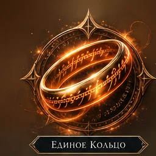
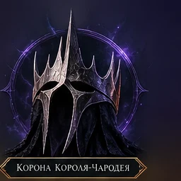
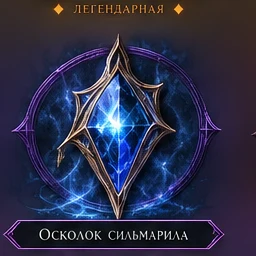

Активна
Легендарная
Кольцо Пепельных гор
Атака клана +8%
Всадники Западной марки · Основан в 2026
Активный PvP-клан, играющий через мобильность, контроль центральных маршрутов и быстрые контратаки. Основная цель сезона — удержать Рохан и выйти к Анориэну.
Удерживать не менее 8 территорий три игровых дня подряд.
| Противник | Территория | Счёт | Результат |
|---|---|---|---|
| Gondor | Эдорас | 248:231 | Победа |
| Angmar | Фангорн | 192:171 | Победа |
| Mordor | Итилиэн | 164:179 | Поражение |
| Isengard | Вестфолд | 211:190 | Победа |
| # | Игрок | Роль | Рейтинг | Winrate | Активность |
|---|---|---|---|---|---|
| 01 | Yukio | Капитан | 2 156 | 77% | online |
| 02 | Eomer | Офицер | 1 988 | 72% | online |
| 03 | Theoden | Офицер | 1 822 | 68% | 2ч |
| 04 | Eowyn | Игрок | 1 746 | 64% | 5ч |
| 05 | Hama | Игрок | 1 603 | 61% | 1д |
| 06 | Erkenbrand | Игрок | 1 558 | 59% | 1д |
Управляет войнами, составом и дипломатией.
YukioМогут назначать атаки и управлять защитой.
Eomer · TheodenМинимальный рейтинг 1 450. Нужны активные игроки.
3 территории имеют активную границу с противником. Самая уязвимая — Фангорн.
Обмен ресурсами, влиянием и предметами между кланами. Сделки подтверждаются офицерами.
| Дата | Клан | Отдали | Получили | Статус |
|---|---|---|---|---|
| 24.08 | Gondor | 800 ◈ | Знамя | Завершена |
| 21.08 | Dale | Колчан | 950 ◈ | Завершена |
| 18.08 | Lorien | 600 ◈ | Книга знаний | Завершена |
Клановые реликвии принадлежат всему составу. Активные предметы дают бонусы в войнах и экономике.



Атака клана +8%
 В хранилище
В хранилищеЗащита клана +8%
 В хранилище
В хранилищеОпыт состава +10%
АктивнаКрит. очки +12%
АктивнаРазведка границ +1

В хранилищеВлияние +6%
 В хранилище
В хранилищеОборона столицы +5%
 В хранилище
В хранилищеМобильность +5%
 В хранилище
В хранилищеОпыт +5%
 В хранилище
В хранилищеАтака +3%

В хранилищеРазведка +3%
 В хранилище
В хранилищеСкорость +2%
Если одновременно активны Кольцо Пепельных гор, Клинок Первого короля и Рог Всадника, клан получает дополнительный бонус.
| Дата | Противник | Территория | Счёт | Результат | Очки |
|---|---|---|---|---|---|
| 23.08 | Gondor | Эдорас | 248:231 | Победа | +180 |
| 21.08 | Angmar | Фангорн | 192:171 | Победа | +140 |
| 18.08 | Mordor | Итилиэн | 164:179 | Поражение | -70 |
| 16.08 | Isengard | Вестфолд | 211:190 | Победа | +155 |
| 13.08 | Gondor | Анориэн | 188:194 | Поражение | -54 |
| 11.08 | Mordor | Эдорас | 239:211 | Победа | +190 |
Победа над Gondor после двух дней осады.
Северная граница получила статус союзной.
Юбилейный матч выиграл Eomer.
Территория перешла под контроль Rohan.
| Сезон | Место | Земли | Winrate |
|---|---|---|---|
| III | 02 | 9 | 68% |
| II | 04 | 7 | 63% |
| I | 07 | 5 | 58% |